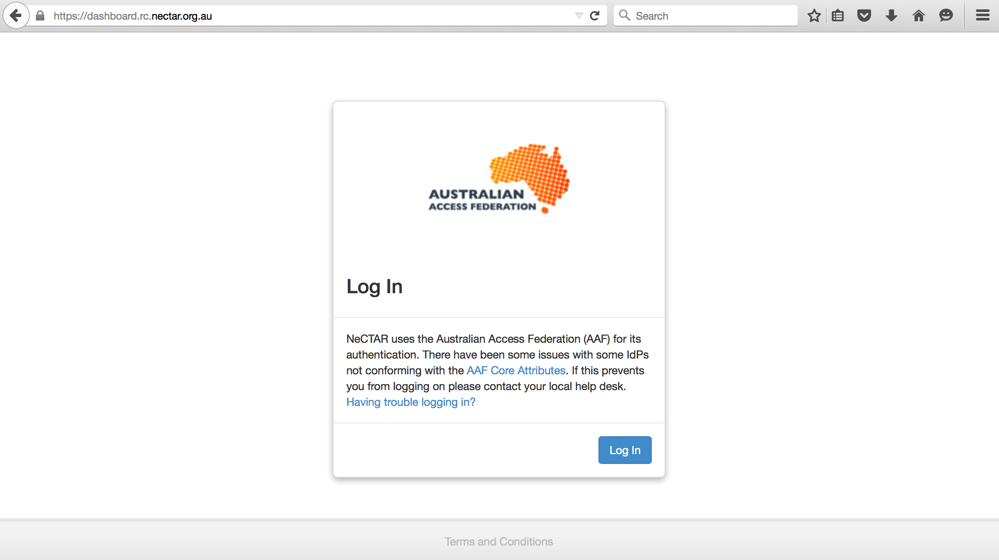
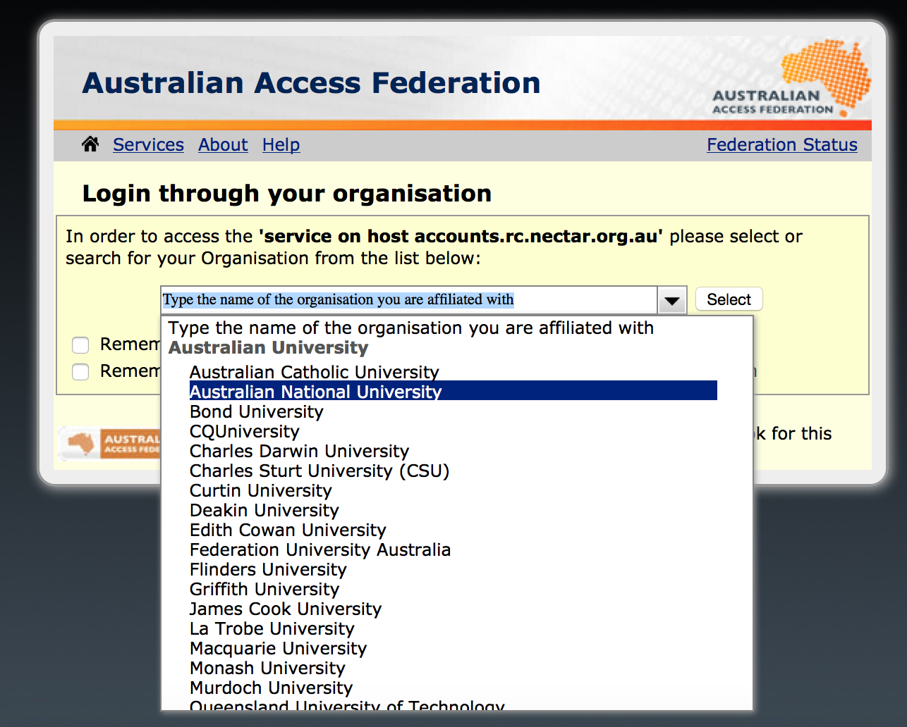
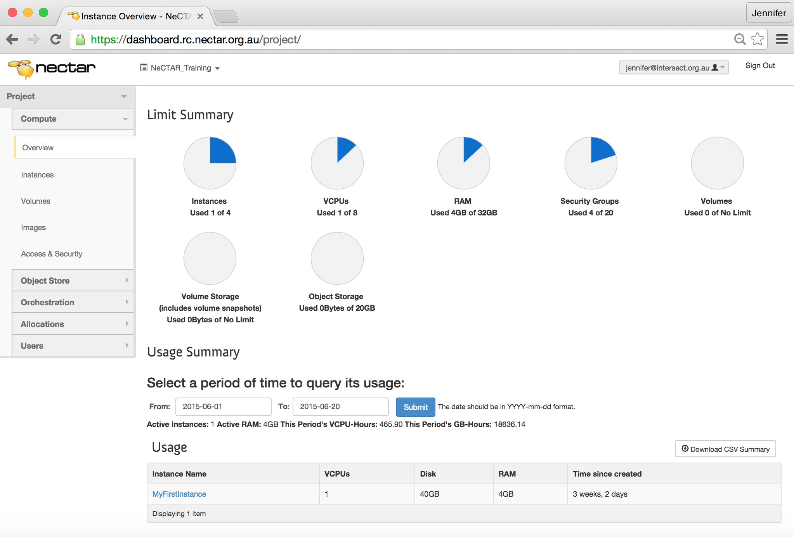
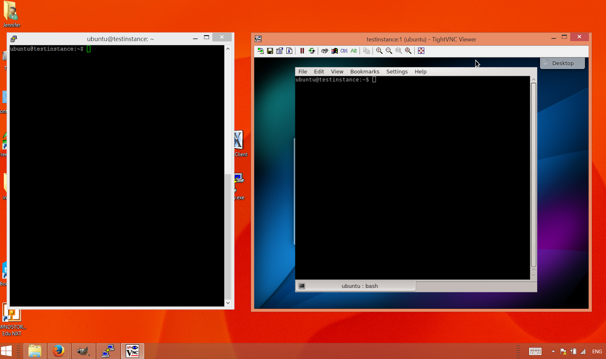
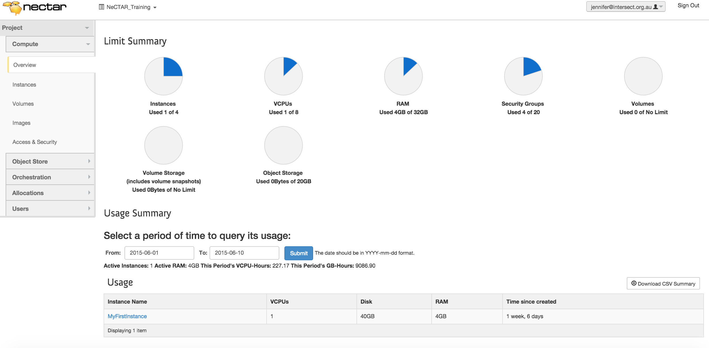
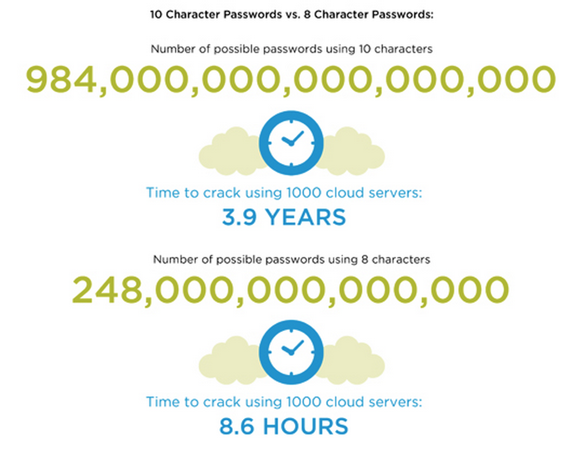
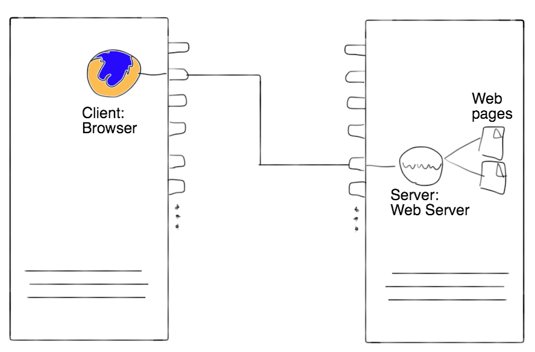
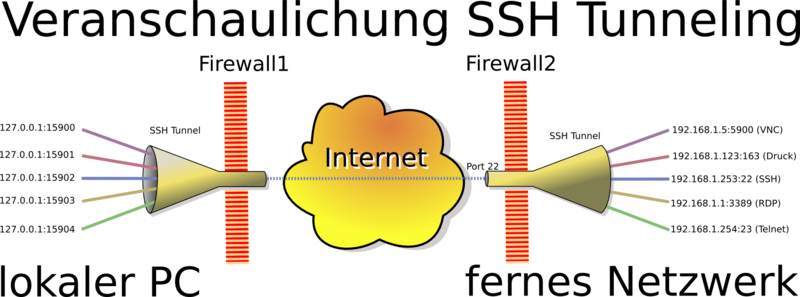
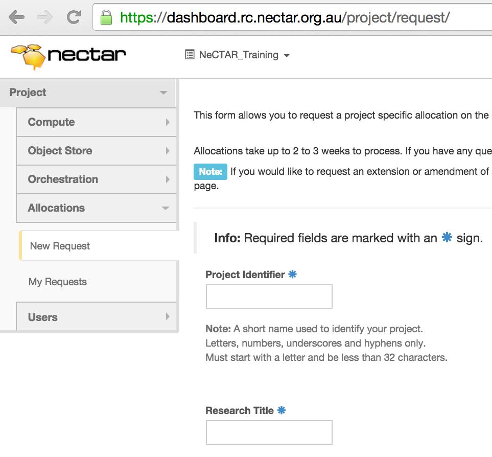

Module 5
The Research Cloud lifecycle
Introduction
This module provides a high-level overview of the processes involved when using the Research Cloud. More details about the specific steps involved will be provided in the later modules — this module will only focus on a high-level overview.
Topics will include: how to get onto the research cloud, necessary housekeeping you will need to do (e.g. updates, backups) and how to keep your VM secure. Finally, you will learn about terminating services without losing anything, how to get support and how to request more resources.
Videos
The following videos go through most of the content in this module and offer a less in-depth description of the subject than the documentation does.
https://www.youtube.com/watch?v=169yoRjEC9c
https://www.youtube.com/watch?v=cbIElk1oFuQ
https://www.youtube.com/watch?v=grSHE8v3oEg
Project trial
Any researcher who logs on to the web Dashboard can immediately have access to a small Project Trial allocation (2 instances and 2 cores for 3 months). A Project provides access to a certain allocation of resources. Project Trials have names like pt-8637. Within your default allocation you can run:
- a medium (two core) VM, or
- two small (single core) VMs.
You can run VMs of various sizes in the cloud, from one to 16 cores, and up to hundreds of VMs. However to obtain such a larger allocation you need to submit an allocation request through the web Dashboard. We will talk about this later in this Module.
Conventions
The notation throughout the training documents can be interpreted as follows:
Words in italics are used for names and terminology, e.g. name of a software, or name of a computing concept. It may also just emphasise a word in the traditional way. Quotations are also written in italics and are put in between quotatioin marks.
Words in bold are used to highlight words which identify important concepts of a paragraph, to make it easier for users to skim through the text to find a paragraph which explains a certain idea, concept or technology.

Additional information which is optional to read is displayed in info boxes like this one.

Important information is displayed in boxes like this one.

Definition of terms are displayed in boxes of this style.

Possibly specific prerequisites for reading a particular section are contained in this type of box at the beginning of a section.
Connecting and maintaining
First of all, you will need to get onto the Research Cloud, which is fairly simple. Then, you will create an virtual machine, which we will also refer to as an instance. You can connect to your instance and while you or your collaborators are using it, you may track utilization of your resources. You should also perform a number of maintenance tasks while your instance is in use. We will discuss the processes involved in your virtual machine’s life cycle in this section.
An instance is a running virtual machine (VM) on the NeCTAR Research Cloud. Instances (VMs) running inside the Research Cloud are just like real-life machines but in a remote location. “Launching” an instance is like booting the computer, and shutting it down closes it. While an instance is shut down, it still exists — it may be rebooted any time. An instance can also be terminated, after which it is deleted (does not exist any more) and cannot be recovered, unless the state of it was saved in a snapshot before its termination.
Note: An instance is sometimes also one physical computer, but in the NeCTAR Cloud, all instances are virtual machines.
How to get onto the research cloud
In this section we will introduce the Dashboard which is used to manage your virtual machines. You will not have to follow the steps below now, because we will do this in detail in Module 7. This module is intended to give you just an overview of the tasks involved.
-
You can access the cloud by first logging on to the NeCTAR Dashboard on https://dashboard.rc.nectar.org.au using your favourite Web Browser.  You can log in with and your university or research institution username and password.
You may access the Research Cloud from any account associated with the Australian Access Federation. You can see whether your institution is part of this in the drop-down list on the Dashboard login window.  -
The Dashboard is used to start, copy and delete instances, and to manage your storage. Once you have logged on to the Dashboard, you can start setting up your VMs. We will do this in detail later in Module 7. 
-
You, and anyone else you allow access to the virtual machines, can then log in to them and use them just like regular servers.
-
Cloud VMs can be accessed using either the command line terminal, or a remote desktop. In the latter case, they can be used almost like a regular desktop computer. In Module 7 we will take a closer look at how to connect via an ssh terminal, and to a remote desktop.

Select an Image and launch an instance
Instances originate from Images. To create your virtual machine, you will have to select an Image.
An Image which can be used to launch instances captures the configuration of a computer system, including the Operating System, and stores it in an Image file. An Image can be a plain “off the shelf” Operating System or include software packages and configuration changes to suit a particular purpose (e.g. Web-serving).
NeCTAR has a few pre-configured Images that can make the set-up of a new instance much easier. They already have been checked for security, and are ready for you to use. In Module 7, we will use such a pre-configured Image to launch our first instance. You may also create your own Image — for more details, please refer you to the documentation at the NeCTAR support website.
You can use a pre-configured Image as a starting base. To suit your purposes, an instance may need some tweaking, configuration changes and installing of software. It is a good idea to make a copy of the instance you have configured for your purposes (e.g. by installing software). You can then start up a new instance from exactly this state in the future. This is useful in particular if you are experimenting and then wish to return to a previous state of your VM.
Copying the state of an instance is called taking a Snapshot of your instance. You can create Images from this Snapshot and use this image to start up new instances. This will save you having to re-do all the configuration steps (e.g. choosing OS, software, etc.). You can also share this Image with somebody else, so they can easily launch up an instance with the same configuration.
Taking a snapshot is very easy, you can do it from the Dashboard. In Module 9, we will discuss to do this.
The use of both terms “Snapshot” and “Image” can be a bit confusing sometimes. An “instance snapshot” is essentially an Image. The snapshot may internally have a few additional properties (information attached to it) than a regular image, but the technical details are not important in the context of this course.
Snapshotting works not only for an instance, but also for storage volumes. A volume Image can then be viewed as a “backup” of your data. This will be discussed in more detail in Module 9.
Virtual machine (VM) instances in the Research Cloud are available in standard sizes:
-
Small (1 core), Medium (2 cores), Large (4 cores), Extra-large or XL (8 cores), XXL (16 cores)
-
Each VM core has 4 GB of memory (RAM) and 30 GB of local disk storage per core, so an XL VM instance has 8 processing cores, 32 GB RAM and 240 GB of local disk storage, called instance storage. You can get access to more than only the instance storage, which we will look at in Module 6.
Tracking utilization
On the Dashboard, you can see the amount of resources you are using. You can also see how long your instances have been up and running.
 You may also want to monitor your virtual machine(s), i.e. keep track of CPU usage, memory usage, etc. You may also want to set up system alerts. The Dashboard does not provide any tools to do this; you will have to use tools for virtual machine monitoring. Module 10 will talks about VM monitoring.
Housekeeping
Updates
Just as you need to regularly update your local office computer to ensure the newest security updates are installed, you also need to maintain your virtual machine. On Linux systems, there are command line tools which allow an easy update and upgrade of your system. At the time of writing, only virtual machines running Linux can be created on the NeCTAR cloud, so it will be easy to upgrade your system at regular intervals. We will discuss how to do this in Module 7.
Backups
Backups are an essential part of any IT infrastructure, especially when it comes to data storage. The NeCTAR cloud does not backup your data or your instance automatically. You will have to do this yourself. There are tools you may use for this, which we will discuss in Module 9.
Mitigating risks
In this section you will guided through an overview of tasks involved in order to make your virtual machine secure and protect it against hacking attempts. In Module 8, we will be talking about security of cloud services and your virtual machine in more detail.
Choose secure Passphrases
Whenever you are prompted to choose a password for your services, you should always choose a secure passphrase.
Secure passwords consist of a combination of alphanumeric characters (letters a-Z and numbers 0-9), and special characters like the underscore _ and hash #. You should use a combination of all (a mix of uppercase and lowercase letters, numbers and special characters).
The password should be at least 10 characters long, and it should be hard to guess.
You should also be able to remember it, or save it in a secure place, to ensure you don’t lose access to your own services.
You should never share your password with anyone!
Note: You should avoid exotic special characters (e.g. umlauts) and white spaces as they may cause problems on some systems.
To get an impression of how significant the difference between various password lengths is, the figure below shows how long it would to take to crack a password when using 1000 cloud servers together to do the cracking:

You will need to choose passphrases at several occasions. For example, before you can establish a connection to your virtual machine, you will have to generate keys which encrypt the connection between you and the virtual machine. A key is associated with a passphrase and it is needed to access your instance. We will do this in Module 7.
Evidently, never share passwords or private keys with anyone not trusted. If you want to give someone access to your virtual machine, they should have their own keys to it, and not use yours. You can then block access to them any time by removing their key from your virtual machine. We will talk more about this in Module 7.
Firewall protection
The NeCTAR instances come with a firewall protection already in place. When you launch and manage your virtual machine, you will have to specify the firewall rules for it. You will use the Dashboard to create security groups, which basically are a collection of firewall rules. When you first create your virtual machine, the default firewall rules allows no access from remote by default — so by default, your instance is secure. However you will need to allow certain forms of access, otherwise you won’t be able to connect to the instance yourself.
While Module 7 will talk you through the steps of setting up the firewall rules, this is a good place to prime ourselves with some background knowledge.
To open up access to the virtual machine, you need to free up Ports in the firewall rules.
A Port is a communications endpoint to a logical connection between computers. Typically, a computer is provided with several ports which can be used by applications to establish communications.
You can think of a Port like a plug: a network connection between two applications is established when two such plugs are connected. Then, the two applications can talk to each other via this connection.

On our local computer’s end of the connection, our application running on our computer is used to send commands to the remote computer (e.g. the VM), and on the remote computer’s side the commands are received and processed by a matching application. The application on the remote machine is commonly called the server application, while the application on our computer is the client application. We say that the “server application is listening“ to incoming connections from client applications. After the connection is established, the applications can talk to each other.
Example: our client application may be the Firefox browser, which we use to load a website; The server application on the instance may be the web-server Apache, which retrieves the requested website file and sends it back to us. Both applications may communicate through Port 80, which is the default port to use for the insecure http protocol. So in order to allow your virtual machine to be a webserver, you need to free up Port 80 in your firewall rules (we will actually do this in Module 7). The Apache web server then “listens” on Port 80 and handles all connections which come into Port 80.
Note: If somebody would spy on your connection through Port 80 (the default http port), they will be seeing the websites which are being transferred. However for public Websites (e.g. your homepage), this is not a concern, as they are public anyway. If you wanted to encrypt the data being transferred (e.g. for credit card payments), you would need to set up a https connection for your websites instead.
Note that each Port that you free up is also a potential entry point to your instance. However, a server application needs to be “listening” to this port in order to establish a connection. If no server application is listening to the Port, it is also not possible to connect to it. You have to make sure that the server application which is “listening” for incoming connections on the Port is secure, or it could compromise your instance and make it vulnerable to hacking attempts.
Summary:
-
You should only free up Ports which are required, and not a whole set of ports.
Why? Say your VM gets infected and a malicious server application tries to open up access at some Port, say 5000. If you have freed up all ports, the malicious application will be successful. Freeing up only the necessary ports increases security because the likelyhood of finding an open port is smaller. If, for example, you free up only port 70 (to name a random choice), and a server application is listening for connections on port 70, there will be no free port which allows access from outside (because port 70 is already busy)! -
You should also make sure that the installed server application is secure (not some dubious software you downloaded from the internet) and that it is up and running, listening on this Port for incoming connections.
Secure Access
When you connect to your virtual machine, always use an encrypted connection. It is possible to set up insecure connections if you allow this on your firewall rules of your virtual machine — however for obvious reasons, this is not recommended.
To connect to the instance yourself, you should set up a ssh connection to the virtual machine or use other secure ways to connect. We will establish a ssh connection to the instance in Module 7.
SSH (short for “Secure Shell”) encrypts connections such that the data coming through can only be deciphered with the ssh key.
To establish a ssh connection, two keys are required: The private and the public key. When the key pair is generated, a passphrase can be chosen for extra security. The private key resides on the users computer and should never be shared with anyone. The public key is added to the remote machine (the instance). Only when the two keys are present at both ends of the connection, then a connection can be established and the data going through the ssh connection will be deciphered with the keys and the passphrase which was used to generate it.
By default, ssh uses Port 22. On the remote machine (the instance), an ssh server is be running which accepts connections from ssh clients.
Many applications use ssh to encrypt connections. For example, if you copy files between your local computer and the virtual machine, you may use the command scp to copy the files, which also uses the ssh protocol.
 The image above shows two connected computers: Your local computer and your instance. When establishing a connection, the ssh client and server are in charge for encrypting and decrypting the data packages which travel between the computers. The end client/server applications receive the unencrypted packages from the ssh server/client.
The image above shows two connected computers: Your local computer and your instance. When establishing a connection, the ssh client and server are in charge for encrypting and decrypting the data packages which travel between the computers. The end client/server applications receive the unencrypted packages from the ssh server/client.
SSH Tunnelling
If you have an application which is not designed for a secure connection by default (e.g. the VNC servers we will set up in Module 7), you can still make the connection secure through the use of ssh tunneling. As the name suggests, this technique also uses the ssh protocol and operates through the ssh client and server applications communicating via Port 22. The nice thing about SSH tunnels is that they are encrypted. Nobody is going to see what sites you’re visiting, they’ll only see an SSH connection to your server.
Whenever you want to run an application which does not have secure connections in-built, ensure security by setting up an ssh tunnel.
SSH Tunnelling is best explained with an example. In Module 7, we will then go through the specifics steps to establish an ssh tunnel.
-
Imagine you want to connect to a server application (e.g. a VNC server) which is running on your virtual machine. This server application listens for incoming connections on Port 5901 and does not inherently support encryption. So if we connected our client application directly (e.g. our client application’s Port 5900 to the server application’s Port 5901), it would go through an insecure connection, and other people could be reading our communication with the server application.
-
To get around this, we can redirect all traffic between our Port 5900 and the server’s Port 5901 through a ssh tunnel. So all traffic from our local Port 5900 will be redirected to our local Port 22, which is used by our ssh client.
-
The ssh client will encrypt all data, and send it off through the encrypted connection to the server. The data then arrives at the remote computers Port 22, where the ssh server receives it and redirects it to its port 5901, on which the server application (e.g. the VNC server) eventually receives our data.
 The figure above shows the two connected computers again, but this time with a ssh tunnel (symbolised by the blue lines): The connection is “deviated” from the ports that the client/server applications think they are communicating through—so the applications are not aware about the communication actually going through Port 22. The tunnel has been set up to automatically catch all communications from the client/server ports (e.g. 5900/5901) and deviate it through the ssh connection. Note that the blue lines in the graph are only symbolic—the actual ports are not open to the outside in the firewall settings (except the ssh port of course).
The neat thing about this is that neither our client application nor the server application realise that the connection had been encrypted, so we don’t need to configure anything complicated in the applications: Everything is handled automatically by redirecting traffic through our ssh tunnel. The only thing you need to do is directing your client application to connect to the host localhost instead of the server. You usually specify the host as a URL, e.g. http://www.server.com or with the IP address of the server, and specify the destination port on this host. Instead, you now need to set it to localhost and the port you used for your ssh tunnel (5900 in the example above). You will also need to ensure that a ssh server is running on your virtual machine, but you will have one running already anyway, in order to connect to the server (we will do this in Module 7).
Limiting access
You should only grant access to your virtual machine to people you trust. Each person should ideally have their own user account and password on the instance, and use their own ssh keys. You should keep the main user account, which we will be using in the exercises in Module 7, only for administration purposes. You can add other users public ssh keys to the instance so they can connect to it—Module 7 also will show you how to do this.
Note: When you create a new user, you can give them administration (“root”) access by adding them to the user group sudo.
Protection software
Linux, Unix and other Unix-like computer operating systems are generally regarded as very well-protected against computer viruses, but they are not immune. There has not yet been a single widespread Linux virus/malware infection like on Windows. However, better safe than sorry.
Your VM is already protected by a firewall, but you may also want to install an AntiVirus protection.
Know your virtual machine and keep things tidy
-
Know your virtual machine! Monitor your system—you will then notice when something abnormal happens.
-
Many types of attacks specifically target Web servers. Use separate virtual machines for them, and keep your research work in a separate virtual machine.
-
Purge (erase) residual data from your storage before you shut your instance down or delete the storage. Module 9 will show how you can do this.
-
Don’t re-provision virtual machines constantly, rather keep optimizing one and then make snapshots of it. Re-configuring the same type of instance many times (which is quite common) poses a risk for human error — you might forget an important step when setting it up quickly. In Module 9 we will see how to make snapshots of our instance.
Encrypting data
Encrypt sensitive data before you upload or download it to or from your instance, unless you are already using an encrypted connection to copy files (e.g. scp or sftp). This will slow down the process of copying files, because they have to be encrypted and decrypted, so only do this if your data is critical. Also, the risk is added of losing access to your data forever if you lose the encryption key or forget the passphrase.
In Module 8 we will go through a few tools you may use to encrypt your data.
NeCTAR security guidelines
Please also read the security guidelines on the NeCTAR support website.
Summary
In summary, things to watch out for to mitigate risks:
- Use secure passphrases.
- Carefully configure the firewall.
- Always use secure methods of access (e.g. ssh logon terminals or ssh tunneling).
- Limit access only to trusted users.
- Know your virtual machine and keep things tidy.
- Encrypt your data.
Cleaning up
When you are finished with your work and don’t need the virtual machine any more, you should terminate it, so it does not take up any more of your allocated resources. By deleting the instance and volumes you don’t need any more, you free them up for other researchers to use. You can easily terminate an instance on the Dashboard.
However before you terminate it, don’t forget to back up your data that is on the on-instance storage (Note: Module 6 will discuss the different storage types). Data on on-instance storage will be lost after you terminate your instance. You may also want to create a Snapshot of your instance before you terminate it, so you can re-launch it any time. Module 9 will discuss options to back up your data and how to take a Snapshot of your instance and later re-launch it from this snapshot.
Similarly, if you don’t need your volume data storage (discussed in Module 6) any more, you should delete it. You can also do this in the Dashboard. Before you delete it, you should securely erase all the data on it, so nobody else can restore it if they get access to the portion of the harddrive where your data was stored before.
You will most likely want to back up your data on the storage, so you can restore it at a later time.
Module 9 will show how to safely erase a hard-disk and how to create a backup of it and restore it at a later time.
Getting support
NeCTAR has a great support team. There are several ways to get support:
-
If you need help with using the Research Cloud or advice on other cloud solutions, first contact your local eResearch office or IT services.
-
The NeCTAR project also offers online user guides and technical support through the NeCTAR Research Cloud support site.
-
Support for the NeCTAR Research Cloud is handled by NeCTAR and available weekdays 9am AEST to 5pm AEST. Before making a support request, try:
-
Browsing the Status page to be informed of any known issues.
-
Consulting the Knowledge Base.
-
Searching the Forums for answers.
-
-
To lodge a support request visit the Contact page.
Resource allocation requests
After you have used the Project Trial to gain experience with virtual machines, you may want to request more resources on the Research Cloud. You will have to submit a request for this.
The NeCTAR Resource Allocation Committee (RAC) approves resource allocation on the basis of the scientific and technical merit of the application and its requirements. You are asked to specify some details about your research and how you plan to use the resources you are requesting.
Before making an allocation request it is best to discuss your requirements with your local eResearch office or IT services. You may easily get access to resources available to your organisation.
The following steps describe the process of submitting such a request.
1. Assess your options.
If you are associated with one of the cloud nodes you may be eligible for access to a local allocation of cloud resource.
So speak to your local node about this prior to submitting a resource request.
Otherwise, your request will be reviewed by the NeCTAR Allocation Committee.
2. Submit a request.
Use the Allocation Request form from the left hand side menu of your Dashboard.

- On Allocations > New Request you can request to create a new project with the resources you need.
- On Allocations > My Requests you can add resources to your existing project (you will also see your previous requests here).
As a rule of thumb, the more resources you ask for, the more detail we require about your research. Requesting a few cores won’t be scrutinised as much as requesting tens or hundreds of cores.
The amount of CPU hours you request is the amount of time your instance will be in existence — not the time the CPU is actually busy with your programs! That is, all time counts between when you launch the VM and terminate it — regardless whether the CPU is idle the whole time, or the VM is shut down or suspended. While you have access to the VM, it counts as CPU hours!
Consider this when you request your allocation, and also when you use your VM — you may back up the state of your VM and then “terminate” it while you don’t need it. It will be easy to restore it to the exact same state when you need it again. More about this in Module 9.
Within the Research Cloud resources are allocated to projects, not users. Projects can have one or more users. In the dashboard your single login will allow you to switch between all projects you have access to.
Each project (other than “Project Trials” with names like pt-xxxx) has at least one Project Manager. Requests to join a project or become an Project Manager for a project should be directed to the management of that project. For more information about projects and how to manage them, see the NeCTAR support website
3. Wait for application to be processed.
After you submit a request, you will receive a confirmation email with all your details.
View or edit your request by clicking on the ‘My Requests’ tab at the Dashboard.
Your request will be reviewed by the your local node (if any) or the NeCTAR Allocation Committee.
This can take up to four weeks to process.
If there are any issues with your request, we will get in touch with you.
You may be asked to provide more detail about your research or to clarify your technical requirements.
4. Manage your allocation.
When your application has been approved, a Research Cloud Project will be created for you. When submitting the request, you have been given the chance to suggest a name (title) for the project. If this name was still available, that’s what your project will be called.
You will receive an email confirming everything is ready to go.
You can now start using your resources allocated to the project.
As a user, you can be a member of more than one project. You select the current project to access at the Dashboard using a drop down menu on the left hand side.
One more thing you may want to do is adding or removing users to the project. Users can be members of multiple Projects sharing each Projects resources with its members. To add other users as members of your Project(s), see the NeCTAR support website
You may also want to increase resources of your existing Project. You can make changes to your request at any time by clicking on ‘My Requests’ at the dashboard. This will show the requests you have made and you can update them. If you change and resubmit the request, it will go through the review process as outlined earlier.
You can find more information about the allocation process on the NeCTAR support website for allocations.
Summary
You have now finished this module and should have a good idea of what is involved in working with the Research Cloud. You know which steps are necessary in order to get the Research Cloud working and keeping your VMs secure.
In this module you have learned about processes to:
- get onto the Research Cloud.
- Launch an instance and connect to it.
- Do housekeeping and take other measures to mitigate risks.
- Clean up after you by terminating instances and deleting storage.
- Get support.
- File an allocation request.
Are you curious about more details? Then the next modules will be exciting for you!
Continue with Module 6.